A cam（太陽戰隊 1981）
A cam (Taiyo Sentai 1981)
Chroma Set
2025
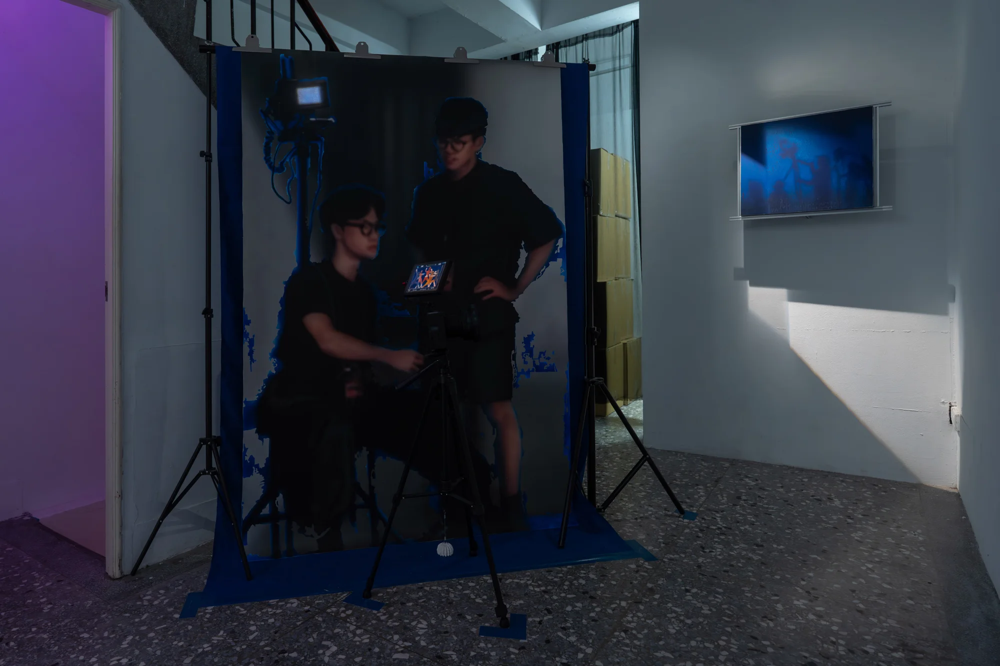
吳柏葳重塑繪畫表面支撐物概念的《Chroma Set》組件，以藍幕劇組的視覺為繪畫形式的藍本。畫作置入木造的支撐物，並以真實的腳架作為支架，將空間處理成如同片場工作時攝影機與監看螢幕林立的殘片。透過團隊介力屋的前身——「藝燃戰隊」的定裝宣傳照，連結早期日本超級戰隊的影像，同時回應藝術團隊四處征戰、組成變動的縮影，以空間設置與繪畫創作共構出一個拍攝中的場景，並從中延伸討論繪畫與影像之間的視覺困境。
The components of Wu Puwei’s Chroma Set reconfigure the notion of a painting’s surface support, taking the visual setting of a blue-screen film crew as the basis for their form. Paintings are fitted into wooden supports and mounted on actual tripods, turning the space into fragments of a working set crowded with cameras and monitors. Promotional portraits of NT.Art Power, the predecessor of the artist collective Leverage Studio, are brought into dialogue with imagery from early Japanese Super Sentai series. These connections also reflect the group’s changing membership and its journeys from one artistic campaign to another. Through the interplay of spatial installation and painting, the work constructs a scene in the midst of filming and opens a discussion of the visual dilemmas between painting and images.
A cam (Taiyo Sentai 1981)
B cam (Kousoku Sentai 1989)
Blue Screen
Afterimage on blue
Mission Waley
NT.Art Power Sentai Return
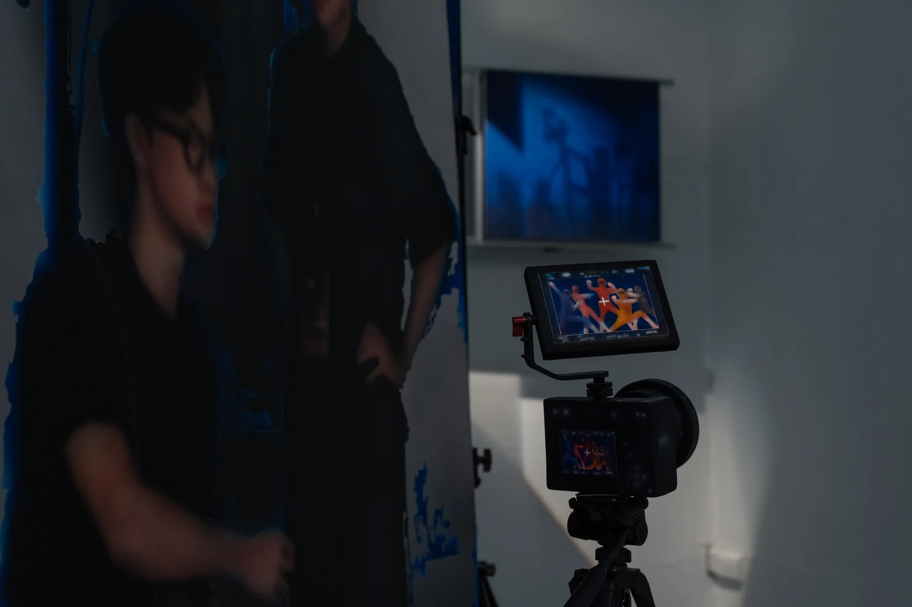
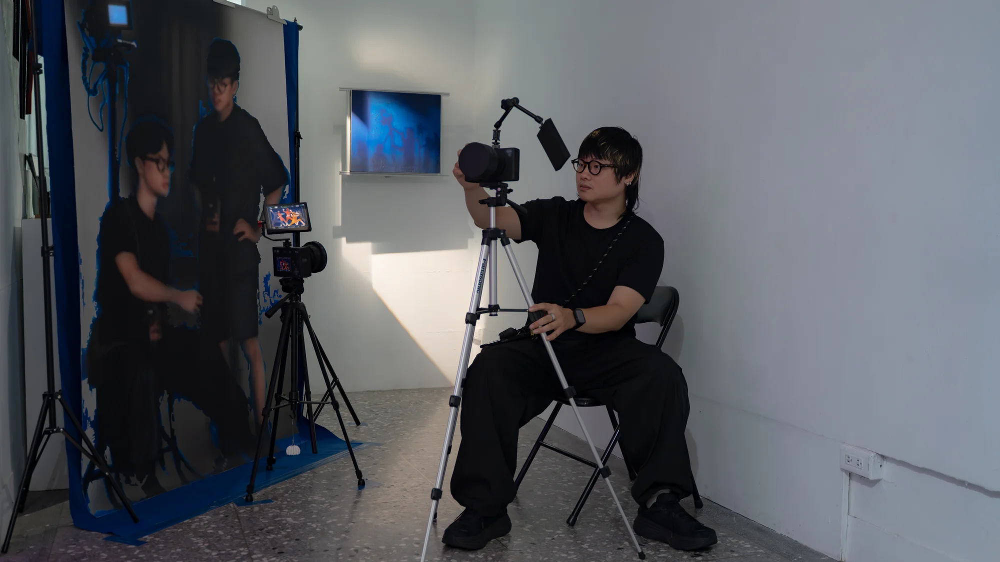
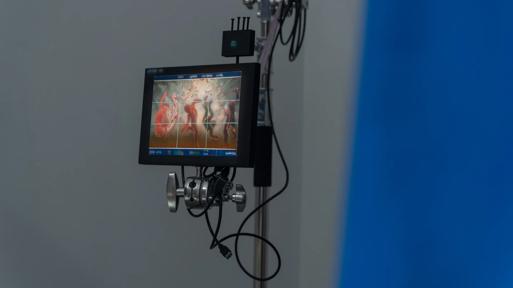
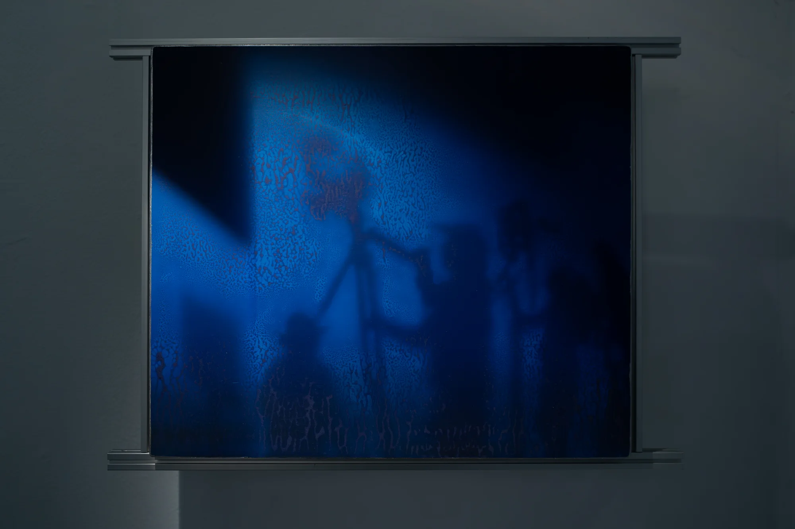
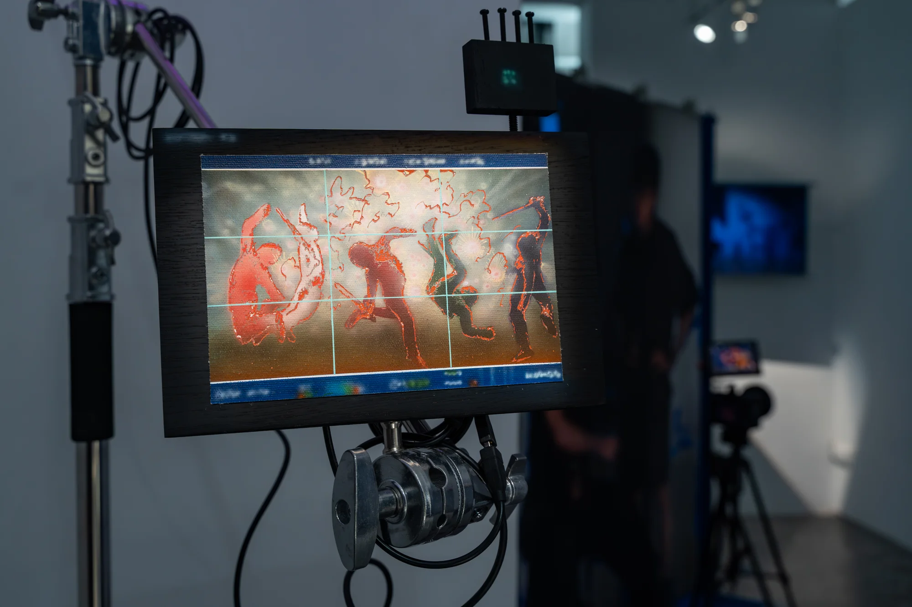
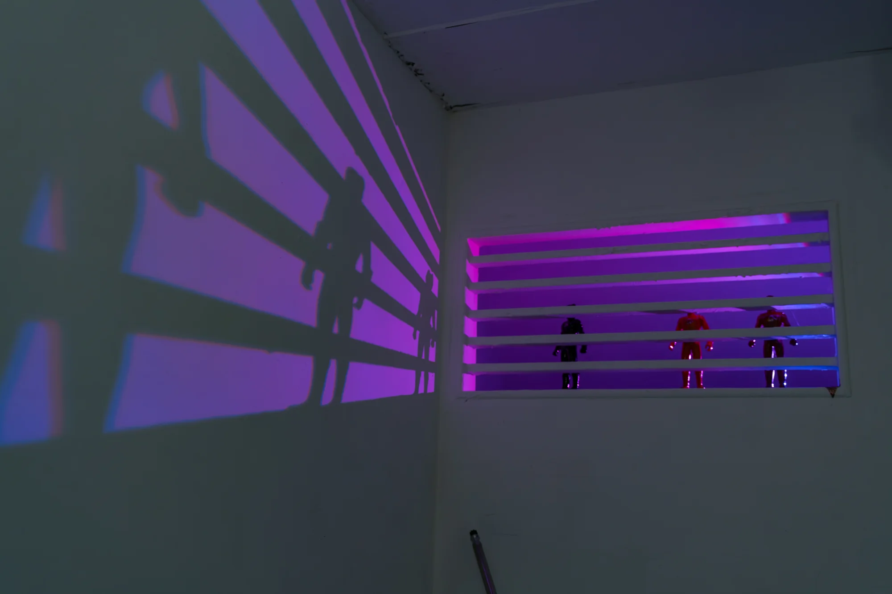
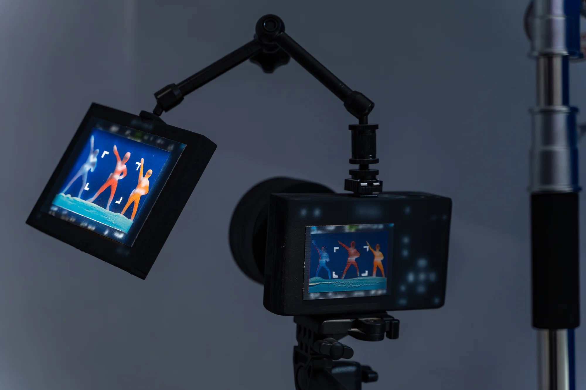
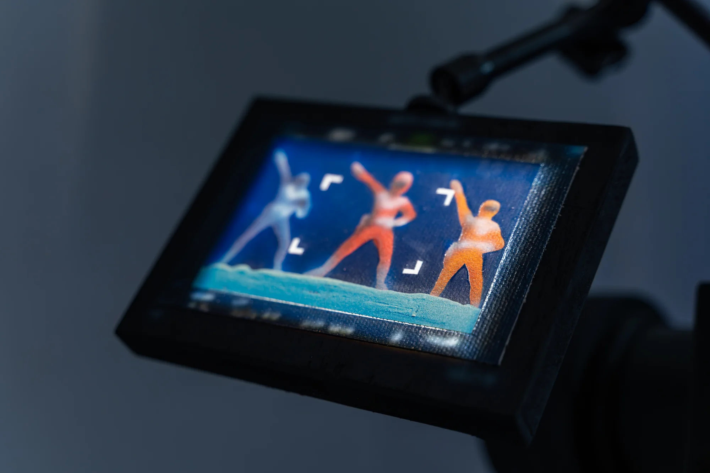
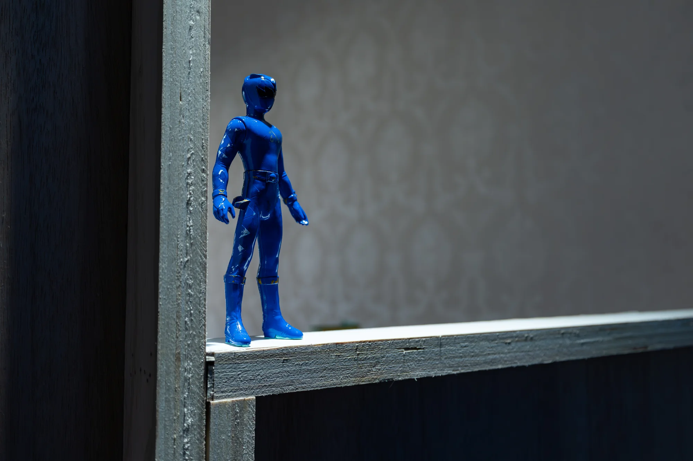
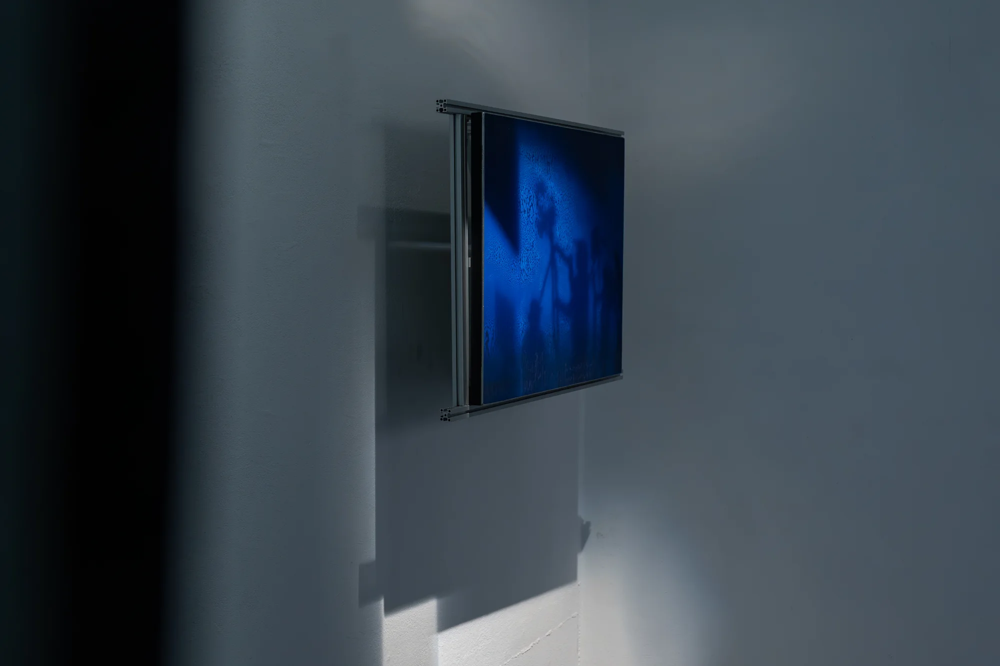
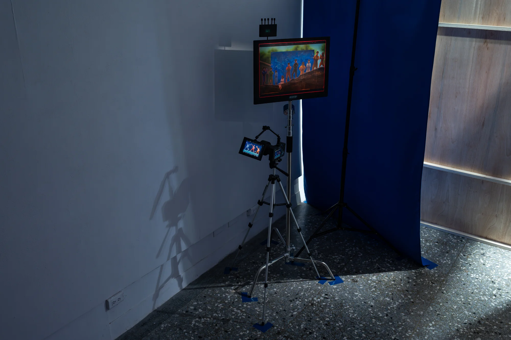
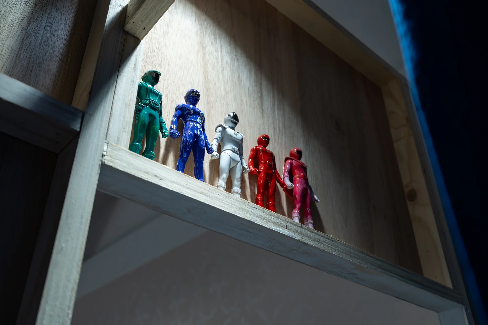
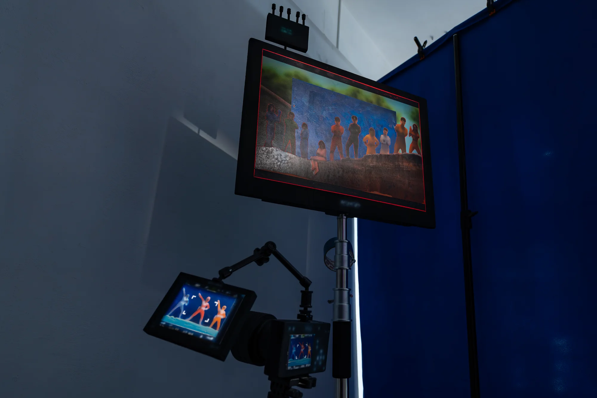
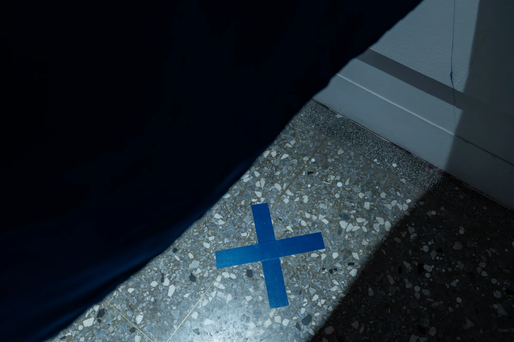